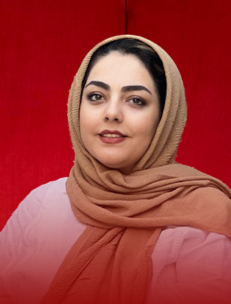
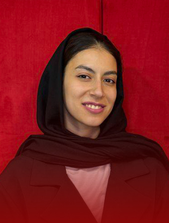

دوپاتریپ — سفر به درون با نگاهی از بیرون
سفرهای روانشناسی تجربهگرا؛ جایی که تغییر نه در کلاس درس، بلکه در دل تجربه شکل میگیرد.
دربارهٔ دوپاتریپاز آموزش تخصصی روانشناسی و کنکور ارشد و دکتری، تا استعدادیابی کودکان، کلینیک رواندرمانی و خدمات سازمانی — یک دهه است که با متخصصان دانشگاههای برتر کشور کنار دانشجویان، خانوادهها و سازمانها هستیم.
ایدهای که از دلِ دغدغههای انسانی و اجتماعی زاده شد؛ جایی که گروهی از متخصصان روانشناسی از دانشگاههای برتر کشور گرد هم آمدند تا پلی بین دانش، آگاهی و عملِ مؤثر در سلامت روان جامعه بسازند.
فعالیت دوپامین از آموزش تخصصی روانشناسان و مشاوران آغاز شد؛ از تربیت نیروهای حرفهای و کمک به ادامهتحصیل در مقاطع ارشد و دکتری، تا استعدادیابی کودکان و نوجوانان، راهاندازی کلینیک درمانی تخصصی و خدمات روانشناسی سازمانی.


سال تجربهٔ تخصصی در آموزش، مشاوره و سلامت روان
شش آزمون تعاملی رایگان — DISC، تیپ شخصیتی، هوش هیجانی، پروفایل استرس، سبک یادگیری و پروفایل انگیزشی. هر آزمون ۵ سؤال دارد، امتیازها از پاسخهای واقعی تو محاسبه میشود و نتیجه یک گزارش اختصاصی با نقاط قوت و پیشنهادهای عملی است.
مشاوره تخصصی، آزمونهای آزمایشی و برنامهریزی دقیق برای کنکور ارشد و دکتری روانشناسی؛ با کارنامهای که خودش حرف میزند.
کارنامهٔ دپارتمان تحصیلی دوپامین تا امروز — رتبه برترها را ببین
سفرهای روانشناسی تجربهگرا؛ جایی که تغییر نه در کلاس درس، بلکه در دل تجربه شکل میگیرد.
دربارهٔ دوپاتریپدر واکنش به فرسایش اجتماعی، «حرکت» را انتخاب کردهایم؛ حضورِ مشترک، قدرتمندترین پاسخ به روزهای سخت است.
دربارهٔ دوپاواکبا یک آزمون ۵ سؤالی شروع کن، یا برای مشاورهٔ تخصصی — ارشد و دکتری، استعدادیابی، درمان و سازمانی — با ما در تماس باش.